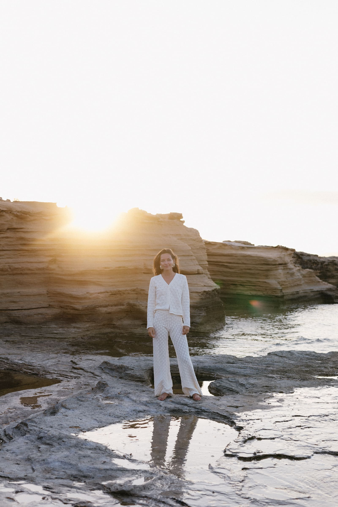
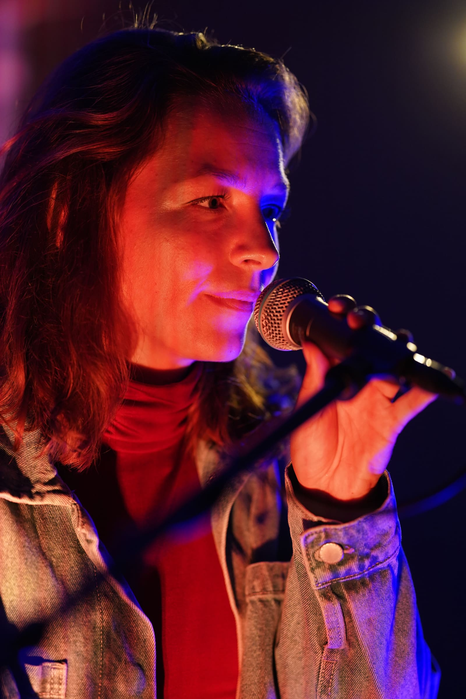
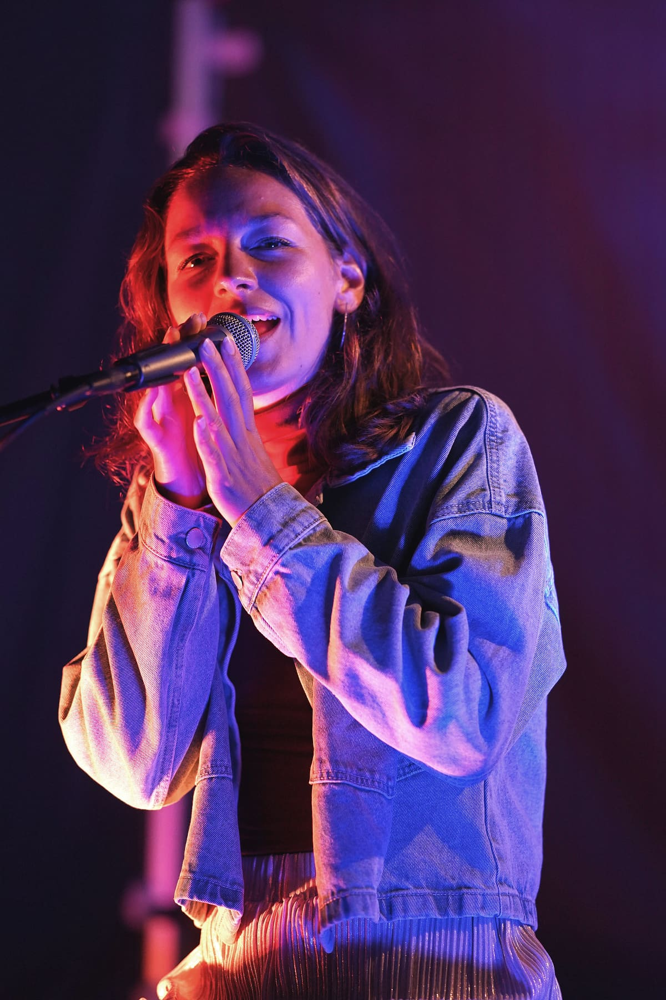
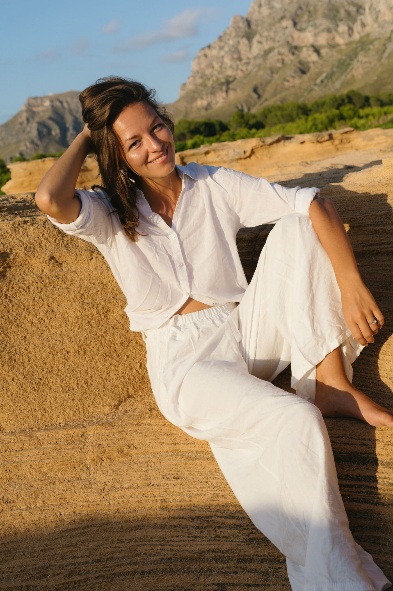

Ob Hochzeit, großes Fest oder ein Abend in kleiner Runde: Ich singe Pop, Soul und Spirituals, von zart bis kraftvoll, melancholisch bis happy, aus dem Ohr ins Herz.

Jeder Abend ist anders, das Programm entsteht passend zum Anlass. Persönlich, nah & echt.
Der Einzug, der erste Tanz, der Moment, in dem alle still werden.
Geburtstag, Jubiläum oder Firmenevent, Live-Gesang, der bewegt.
Intime Live-Sets für Bars, Restaurants und besondere Abende.
Musik verbindet. Und drückt das aus, was manchmal keine Worte findet. Für mich ist Singen Natur und Nachhausekommen, Teilen und Heilen, Ausdruck, Wärme, Herz.
Da, wo Musik am unmittelbarsten wirkt: im Moment, im Raum, zwischen den Menschen.
Aktuell: live in Norderstedt beim ParkFunkeln, August 2026.


Eine kleine Auswahl. Das Programm entsteht immer passend zum Anlass, von Klassikern bis zu eigenen Songs.
Drei meiner eigenen Lieder, und was dahintersteht. Kleine Ausschnitte aus meinem Leben, die zu Musik geworden sind.
Entstanden im Flugzeug. Von oben sieht alles viel kleiner aus und so übersichtlich, genau dieses Gefühl steckt in diesem Song. It's all about perspective, it's all about view.
Erinnert uns daran, dass die gemeinsame Geschichte immer bleibt, auch wenn uns manche Menschen zu früh verlassen.
Entstanden mitten in der schönsten Natur, beim Wandern in der Sächsischen Schweiz, mitten im Wald. Eine Erinnerung an unsere Kraft und unendliche Freiheit als Mensch.
Auf Wunsch mit Piano, Gitarre und Cajon, individuelle Kombinationen möglich.
„Wir haben Pia auf der Hochzeit einer Freundin gehört und waren zu Tränen gerührt. Tief berührender Gesang, eine ganz natürliche Ausstrahlung. So hatte sie schnell die Herzen ihrer Zuhörer erobert."
„Pia hatte ein wunderschönes Programm für meine Geburtstagsfeier zusammengestellt. Sehr flexibel bei der Auswahl der Lieder und auf alle Wünsche eingegangen. Ihre Stimme hat eine schöne Bandbreite, von tief bis hoch, von kraftvoll bis zart."
„Ich hatte Pia für meinen Geburtstag und eine große Veranstaltung gebucht. Sie war ein Highlight, und ich bekomme immer noch positive Rückmeldungen über die ausdrucksstarke Sängerin."

Ich singe, seit ich denken kann, erst für mich, zu Hause, dann im Chor, in Projekten und später auf Musical- und Konzertbühnen, vor allem in Hamburg und darüber hinaus. Heute trete ich bei Hochzeiten, Feiern und kleinen Abenden auf, außerdem seit mehreren Jahren beim ParkFunkeln in Norderstedt.
Mir ist wichtig, genau hinzuhören und das Programm gemeinsam mit den Gastgebern zu gestalten. Am liebsten singe ich nah an den Menschen, in kleinen, persönlichen Runden.
Whether it's a wedding, a big celebration, or an evening among friends: I sing pop, soul and spirituals, from tender to powerful, melancholic to joyful, straight from the ear to the heart.
Every evening is different, the program takes shape around the occasion. Personal, close & real.
The entrance, the first dance, the moment everyone goes quiet.
Birthdays, anniversaries or company events, live music that moves people.
Intimate live sets for restaurants, bars and special evenings.
Music connects. And expresses what words sometimes cannot. To me, singing is nature and coming home, sharing and healing, expression, warmth, heart.
Where music works most directly: in the moment, in the room, between people.
Currently: live in Norderstedt at ParkFunkeln, August 2026.
A small selection. The set is always shaped around the occasion, from classics to original songs.
Three of my own songs, and what's behind them. Small pieces of my life that became music.
Written above the clouds. From up there, everything looks smaller and so much clearer, that's exactly the feeling behind this song. It's all about perspective, it's all about view.
A reminder that our shared story always stays, even when someone leaves too soon.
Written in the middle of the most beautiful nature, hiking through the forests of Saxon Switzerland. A reminder of our strength and boundless freedom as human beings.
With piano, guitar and cajon on request, individual combinations possible.
"We heard Pia at a friend's wedding and were moved to tears. Deeply touching vocals, a wonderfully natural presence. She quickly won the hearts of everyone listening."
"Pia put together a wonderful program for my birthday celebration. Very flexible with song choices and open to every wish. Her voice has a beautiful range, from low to high, powerful to delicate."
"I booked Pia for my birthday and for a big event. She was a real highlight, and I still get positive feedback about her expressive voice."
I've been singing for as long as I can remember, first for myself at home, then in a choir, in projects, and later on musical and concert stages, mainly in Hamburg and beyond. Today I perform at weddings, celebrations and smaller evenings, and for several years now at ParkFunkeln in Norderstedt.
What matters to me is listening closely and shaping the set together with the hosts. I love singing close to people, in small, personal settings.
Tell me a little about your occasion. I'm looking forward to hearing from you.
Send a message